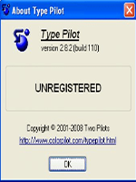

Утилита Type Pilot также ускоряет рутинную работу по набору текста.
Чтобы добавить, например, к письму свою подпись со всеми координатами,
можно просто ввести в строке слово подпись, и оно автоматически заменится
блоком текста, содержащим координаты пользователя.
Ещё одна полезная утилита, предназначенная для пакета Microsoft Word,
— Batch Replacer for MS Word — служит для пакетной замены информации
в документах Microsoft Word. По сути, программа является плагином для
пакета Useful File Utilities (UFO) и работает лишь при установленном пакете.
Используя UFO, вначале необходимо выделить все файлы, в которые требуется
внести изменения. Затем выбрать в меню файлового менеджера пункт Plug-ins
и запустить Batch Replacer for MS Word.
Это крошечная, удивительно быстрая бесплатная утилита с открытым исходным
кодом для Windows. Она позволяет автоматизировать все, от нажатия клавиш до мыши.
Программирование для непрограммистов. Это полная система автоматизации для Windows
без разочарований из-за VBScript.
Все закончилось, и 7zip выиграл. Время подняться на борт. Формат 7z быстро становится
форматом сжатия, который выбирают самые требовательные пользователи. Обычно сжатие
на 2-10% лучше, чем у ZIP. Это приложение прекрасно интегрируется в проводник Windows
и открывает практически ВСЕ, что вы когда-либо захотите открыть, от TAR до ISO, от RAR
до CAB.